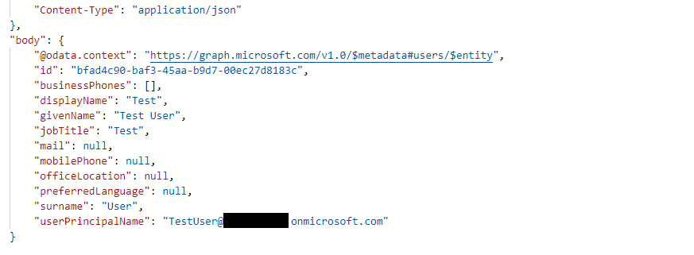
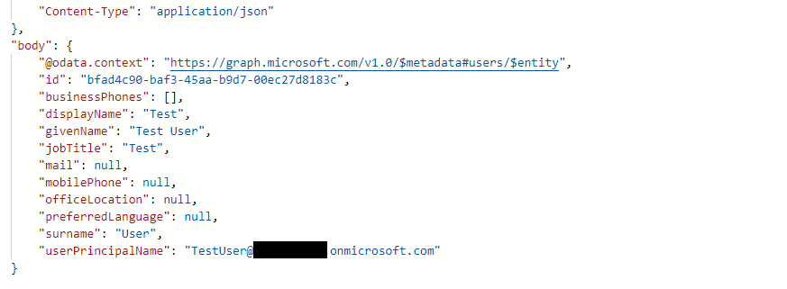

Onboarding a user (creating an AzureAD account and assigning them to a group) using a Logic App and automating the setup using information from a Sharepoint list
Resources used:
• Sharepoint environment (through the Microsoft Developer Program)
• Azure Logic app
Initial setup included creating a blank Logic app and creating a Sharepoint list accessible using a user account to integrate with connectors for Sharepoint and AzureAD (EntraID)
To begin a Sharepoint list was created with the headers Name, Surname, Job Title and Department, these were just placeholders in the begining but additional fields can be added in future as needed.
In the logic app 2 initial connectors were used, Sharepoint's "When an item is created" and Microsoft EntraID's "Create User"
The required fields were added to both connectors:
I ran an initial test of the app and this failed - looking at the error output it was relating to the User Principal name
 This is a result of the connector being explicit in terms of only forwarding the exact information to EntraID - when you create an account manually through EntraID it will auto-fill the rest of the domain (e.g email@onmicrosoft.com)
Instead, in this case the connector would forward the first & last name only, not adding the rest of the domain address - to resolve this I would have to explicitally add the rest of the domain
Running the logic app again I encounter a seperate error - this one relates to the 'Password' field in the connector:
Since this relates to the complexity of the password I would have to add a bit more to the automatically generated password
Looking at the EntraID user creation I can see the password requirements
To resolve this I added lower case and upper case characters to the connector:
This would generate a password along the lines of RandomPassword and 8 digits
Running the test a third time successfully creates the user account:

Alone this would work however I also added a few more things to make the onboarding process easier/more intuative
First I created 2 Groups to represent the Department specified in the Sharepoint list
I then also converted their 'Membership type' to Dynamically Assigned to allow me to automatically add everyone with a specific department on their EntraID account to the correct group
Secondly I also added a confirmation that the user account has been set up - currently as there is no confirmation there is no way to know the account was created other than having access to EntraID
I chose to add a confirmation on the Sharepoint list to make it easy for the end user to see if the account was created
This was done by adding an 'Update Item' connector after the Entra ID one that will mark update the 'User created' field on the Sharepoint list to 'Yes'
I then ran the logic app with 2 users, one for Finance and another for IT - both these ran sucessfully and had the expected outpiut
This updated the Sharepoint list as expected:
This is a result of the connector being explicit in terms of only forwarding the exact information to EntraID - when you create an account manually through EntraID it will auto-fill the rest of the domain (e.g email@onmicrosoft.com)
Instead, in this case the connector would forward the first & last name only, not adding the rest of the domain address - to resolve this I would have to explicitally add the rest of the domain
Running the logic app again I encounter a seperate error - this one relates to the 'Password' field in the connector:
Since this relates to the complexity of the password I would have to add a bit more to the automatically generated password
Looking at the EntraID user creation I can see the password requirements
To resolve this I added lower case and upper case characters to the connector:
This would generate a password along the lines of RandomPassword and 8 digits
Running the test a third time successfully creates the user account:

Alone this would work however I also added a few more things to make the onboarding process easier/more intuative
First I created 2 Groups to represent the Department specified in the Sharepoint list
I then also converted their 'Membership type' to Dynamically Assigned to allow me to automatically add everyone with a specific department on their EntraID account to the correct group
Secondly I also added a confirmation that the user account has been set up - currently as there is no confirmation there is no way to know the account was created other than having access to EntraID
I chose to add a confirmation on the Sharepoint list to make it easy for the end user to see if the account was created
This was done by adding an 'Update Item' connector after the Entra ID one that will mark update the 'User created' field on the Sharepoint list to 'Yes'
I then ran the logic app with 2 users, one for Finance and another for IT - both these ran sucessfully and had the expected outpiut
This updated the Sharepoint list as expected:
 And this also automatically assinged them to the correct group:
Finally I also added an alert to the logic app - this would notify me whenever the Logic app failed to run:
I verified this worked by inputting an invalid name in the Sharepoint list:
This logic app works automatically upon a user being created in the Sharepoint list, and has error alerts however this could be improved by:
• Excluding certain characters from the Sharepoint list - specifically exluding symbols from the fields which would lead to errors
• Add a confirmation field to the Sharepoint list - required that any row has a 'Confirmation' before the logic app creates the user - this would reduce/eliminate any user errors
• Assign additional permissions attached to the Groups - such as access to enterprise apps or admin permissions to certain services
• Send out an onboarding email - In my environment I don't have mailboxes but you could integrate the Exchange connectors and send out an email with the users email, password, added permissions etc to streamline onboarding
And this also automatically assinged them to the correct group:
Finally I also added an alert to the logic app - this would notify me whenever the Logic app failed to run:
I verified this worked by inputting an invalid name in the Sharepoint list:
This logic app works automatically upon a user being created in the Sharepoint list, and has error alerts however this could be improved by:
• Excluding certain characters from the Sharepoint list - specifically exluding symbols from the fields which would lead to errors
• Add a confirmation field to the Sharepoint list - required that any row has a 'Confirmation' before the logic app creates the user - this would reduce/eliminate any user errors
• Assign additional permissions attached to the Groups - such as access to enterprise apps or admin permissions to certain services
• Send out an onboarding email - In my environment I don't have mailboxes but you could integrate the Exchange connectors and send out an email with the users email, password, added permissions etc to streamline onboarding